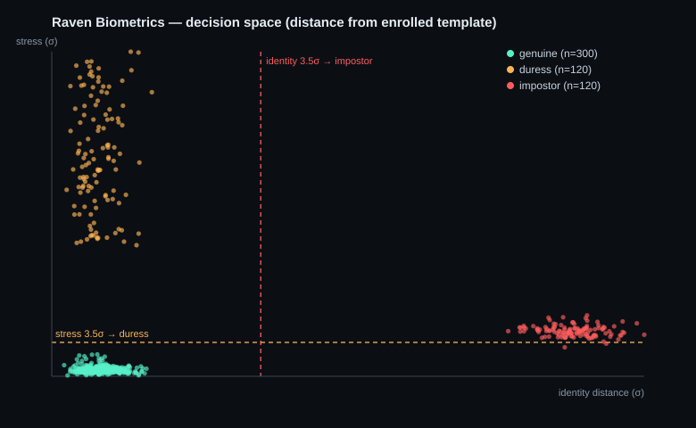

Continuous biometric authentication that knows the difference between an impostor and a genuine user under duress. Built on a governed, audit-ready data platform.
Each authentication passes through isolated layers, and every layer writes to a governed data platform underneath. The sensor is the only part that touches hardware; everything above it is portable.
Physiology and sweat-chemistry channels behind a single, pluggable sensor interface. Swap the hardware, keep the pipeline.
Low-quality, stale, or replayed captures are denied before they can influence a decision.
Access is granted only on a genuine decision, from a live capture, on a healthy device. Everything else stays locked.
Every event above is persisted, signed, and audited here.
Raven splits the match into two physiological distances. That one design choice separates three states a conventional matcher collapses into one, including the coerced legitimate user that every binary system waves straight through.
The enrolled person, acting normally.
The enrolled person, but physiologically elevated. Consistent with coercion or distress.
A different person presenting as the enrolled user.
Distance from the enrolled template in standard deviations, identity on one axis, stress on the other. In the reference evaluation the operating point holds false-accept and false-reject at zero while detecting duress on every stressed capture.

Reference evaluation on synthetic data. Genuine clusters near the origin; duress rises on the stress axis; impostors diverge on the identity axis.
Biometric identifiers are the least revocable data class there is. Raven treats them as a governed asset across their whole lifecycle, not as a disposable authentication token.
No subject is enrolled or matched without an active consent record carrying a purpose and a timestamp. It is a precondition, not a policy note.
Every material event commits to the hash of the one before it. Any later edit breaks the chain and a single pass detects it.
Each authentication event is HMAC-signed with the device key, so a stored decision is tamper-evident and attributable.
A subject can be fully purged, and the deletion itself is recorded in the audit chain. Prove the data is gone and that its removal was authorized.
Provenance-carrying payloads with the hot fields promoted to indexable columns. Retrieval is structured by subject and time, which partition cleanly for scale.
Because every sample carries provenance and consent, training sets can be constrained to permitted-use data and reproduced with their lineage intact.
| Capability | Conventional biometric auth | Raven Biometrics |
|---|---|---|
| Match decision | Binary accept or reject | Three-state: genuine, duress, impostor |
| Coerced legitimate user | Granted access | Detected and denied |
| Continuous authentication | Rare, usually a separate system | Native, every capture |
| Consent lineage | Typically absent | Enforced at the data layer |
| Audit trail | Application logs, editable | Append-only, hash-chained, tamper-evident |
| Decision integrity | Unsigned | HMAC-signed per event |
| Subject deletion | Manual, incomplete | Right-to-be-forgotten, deletion audited |
| Hardware coupling | Tight | Behind a single sensor interface |
The biometric input is currently synthetic, behind a real-sensor interface. The liveness and event-signing layers are functional and demonstrative; production deployment requires hardware anti-spoofing, cryptographic nonces, and managed keys. The evaluation is synthetic. None of this is hidden, because the value does not depend on it: the identity and stress decomposition, the three-state decision, and the governed, auditable data platform are real and reproducible today. The remaining work is integration, not invention.
The whitepaper covers the harness model, the identity and stress decomposition, the biometric data-management model, governance by design, and the evaluation.